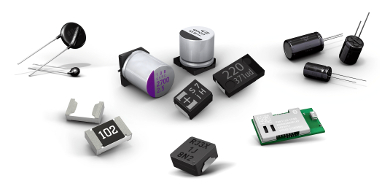
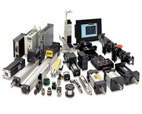

🔌 Componentes electrónicos
🔌 Componentes pasivos (no generan energía, solo la almacenan o disipan)

Resistencia (R): Limita o controla el flujo de corriente.
Condensador / Capacitor (C): Almacena carga eléctrica temporalmente.
Inductor (L): Almacena energía en un campo magnético; resiste cambios de corriente.
Diodo (ideal): Deja pasar la corriente en una sola dirección.
⚙️ Componentes activos (controlan el flujo de corriente y pueden amplificar señales)

Transistor (BJT, MOSFET): Amplifica o conmuta señales; base de la electrónica digital.
Diodo LED: Emite luz al recibir corriente.
Fotodiodo / LDR: Responde a la luz; se usa en sensores.
Circuito integrado (CI o IC): Conjunto de componentes miniaturizados (ej. microprocesadores, amplificadores operacionales).
Regulador de voltaje: Mantiene un voltaje constante.
🧭 Dispositivos electromecánicos

Interruptor / Pulsador: Abre o cierra el circuito manualmente.
Relevador (relé): Interruptor activado eléctricamente.
Zumbador / Buzzer: Emite sonido cuando se activa.
Motor: Convierte energía eléctrica en movimiento.
🧪 Componentes de medición o detección

Sensor de temperatura (NTC, termistor, LM35): Detecta variaciones térmicas.
Sensor de humedad, gas, movimiento, etc.: Transforma fenómenos físicos en señales eléctricas.
Obra publicada con Licencia Creative Commons Reconocimiento Compartir igual 4.0